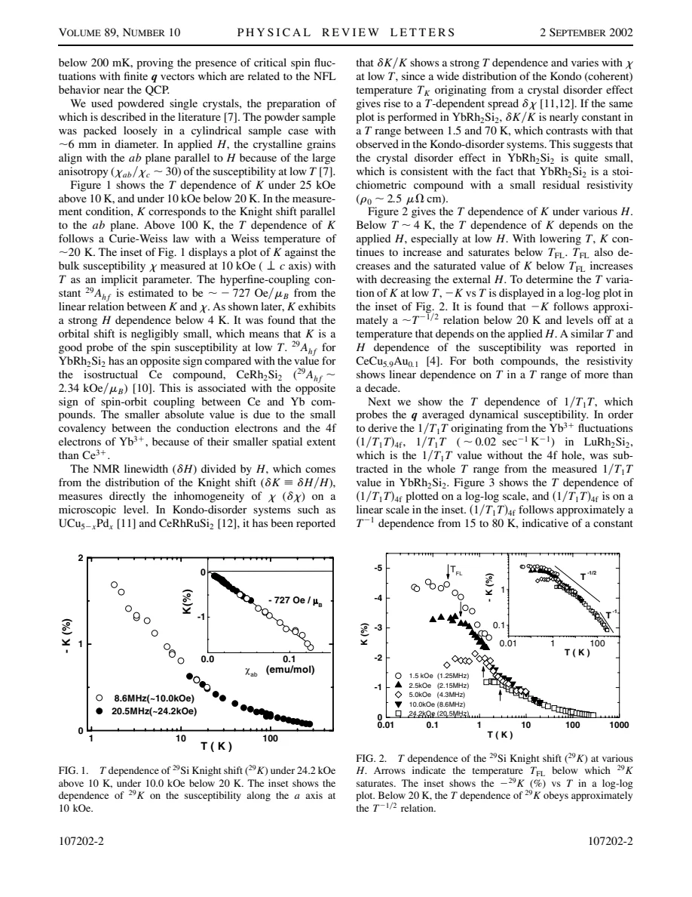
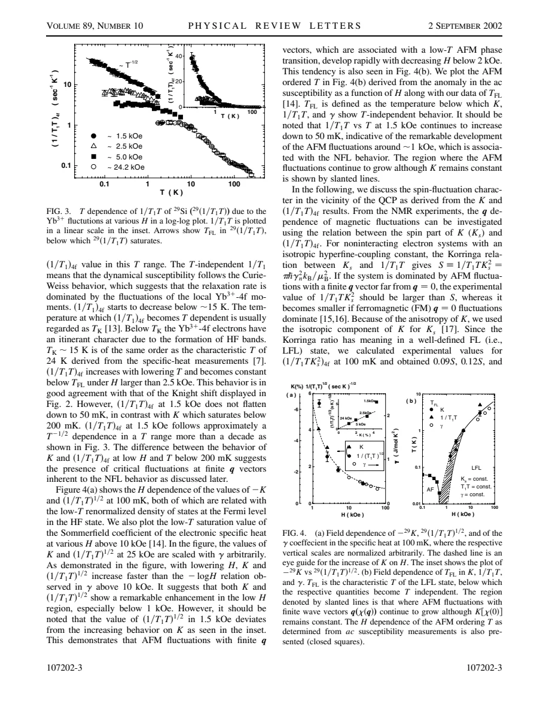

experiment · Ishida · supplied source 2002
YbRh2Si2: Spin Fluctuations in the Vicinity of a Quantum Critical Point at Low Magnetic Field
The supplied 2002 Si NMR study finds dominant uniform fluctuations at higher fields and an extra finite-q contribution at its lowest field, inferred from relaxation growing after the Knight shift saturates.
The question: What spin-fluctuation character accompanies field-tuned non-Fermi-liquid behavior in YbRh2Si2?
Before you start: the few terms you need
- Heavy fermion: a metal with strongly renormalized low-energy quasiparticles
- Knight shift: static uniform susceptibility weighted by hyperfine coupling
- Relaxation 1/(T1T): momentum-weighted low-frequency spin dynamics
- Korringa ratio: comparison of relaxation with squared spin shift, under stated assumptions
- Quantum critical point: zero-temperature boundary tuned by a control parameter
See → explain → test
Understand it in four pictures.
Picture 1 / 4
One nucleus asks two questions
Look for: The Si shift measures the uniform static response, while its relaxation samples weighted dynamics over q.
Swipe across the picture to read every label, or enlarge it below.
- Si Knight shift: q = 0
- Si relaxation: weighted q dynamics
Teaching distinction; a local NMR measurement does not map the entire q spectrum directly.
The two quantities need not evolve together when finite-q fluctuations appear.
Picture 2 / 4
Compare field regimes
Look for: At fields above 2.5 kOe, both quantities flatten at low T and the normalized Korringa ratio is small.
Swipe across the picture to read every label, or enlarge it below.
- Higher-field low T
- Lowest measured field
Teaching comparison of source observations, not a fitted universal crossover curve.
The source interprets this regime as dominated by ferromagnetic, q≈0 fluctuations.
Picture 3 / 4
Notice the mismatch
Look for: At1.5 kOe the shift saturates below about 200 mK, but 1/(T1T) grows down to50 mK.
Swipe across the picture to read every label, or enlarge it below.
- Static shift stays fixed
- Dynamic rate grows
- Extra finite-q fluctuations
Source-supported inference under hyperfine assumptions; the precise ordering wavevector is not determined.
An additional finite-q dynamic component is needed beyond a growing uniform response alone.
Picture 4 / 4
Keep the extrapolation visible
Look for: The inferred competition is discussed near an AF critical field around 0.5 kOe, below the lowest NMR field.
Swipe across the picture to read every label, or enlarge it below.
- NMR range
- Critical interpretation
Teaching range check. High-resolution neutron scattering is suggested for direct q information.
Coexistence and competition are a proposed critical picture; the NMR data do not directly image a two-peak q spectrum at the QCP.
Predict before revealing
At low field, Ks is constant but 1/(T1T) keeps increasing. What does that suggest within the source's assumptions?
Choose an answer, then compare the reasoning.
Relaxation samples momentum-weighted dynamics; the static shift constrains only the uniform response.
Read the answer
Extra finite-q dynamics coexist with the saturated uniform response Relaxation samples momentum-weighted dynamics; the static shift constrains only the uniform response.
Go deeper Follow the full argument
Why a clean low-field material is useful
The paper studies stoichiometric YbRh2Si2 near a very low-temperature magnetic boundary. Earlier bulk measurements cited in the source found ordering near 70 mK at zero field and restoration of Landau-Fermi-liquid behavior with increasing field. Unlike chemical substitution, field tuning need not add random dopant environments, making this a useful system for examining intrinsic critical fluctuations. The Si NMR measurements span roughly 1.5–25 kOe and use powdered single crystals that align with their ab planes parallel to the field because the susceptibility is strongly anisotropic. The relevant field direction is therefore essential. The source discusses an AF critical field near 0.5 kOe, but its own lowest NMR field is higher. It probes the vicinity and extrapolates the critical interpretation rather than measuring directly at that endpoint.
Shift and relaxation contain different information
The Knight shift is proportional to the uniform static susceptibility, apart from orbital contributions. The K-versus-bulk-susceptibility plot gives a negative hyperfine coupling of about−727 Oe per Bohr magneton, so the increasingly negative shift reflects an increasing positive spin response. Relaxation divided by temperature samples low-frequency spin fluctuations over momentum space, weighted by the hyperfine coupling. The analysis subtracts the small relaxation coefficient of nonmagnetic LuRh2Si2 to isolate a Yb4f contribution. This reference subtraction and the anisotropic-to-isotropic shift estimate are assumptions that enter later ratios. A large rate alone does not identify AF fluctuations; it must be compared with how the uniform response and the probe weights behave. The same nucleus can consequently reveal a change of fluctuation character through a mismatch between two observables.
The higher-field regime is not simply an AF QCP signature
For fields of2.5 kOe and above, the shift and relaxation coefficient both become approximately temperature independent below a field-dependent crossover temperature. The paper interprets that regime as a field-induced Landau Fermi liquid. The relaxation-to-shift-squared ratio is around one-tenth of its free-electron reference in the reported analysis. With the stated isotropic hyperfine assumption, such a small ratio indicates enhanced q≈0, ferromagnetic-like fluctuations rather than a dominant AF peak far from zero momentum. The observed approximately linear relation between 1/(T1T) and the spin shift is also compared with nearly ferromagnetic metals. Calling the entire experiment an 'AF fluctuation measurement' would therefore discard a central finding: strong uniform fluctuations persist over much of the field range even though the nearby zero-field ordered phase is antiferromagnetic.
The low-field mismatch isolates an extra contribution
At the lowest measured field,1.5 kOe, the Knight shift levels off below about 200 mK while the 4f relaxation coefficient continues growing down to50 mK, approximately as T to the minus one-half over an extended range. If only the same uniform susceptibility were changing, these two trends would be difficult to reconcile. The source therefore infers an additional finite-q dynamic component, coexisting with a large nearly saturated uniform response. It associates that component with AF fluctuations that grow as the magnetic boundary is approached. NMR alone does not identify the exact wavevector or directly resolve two peaks in momentum space. The inference is still informative: the static uniform response cannot account for all the extra relaxation. This is an example of why comparing probes of response and dynamics can reveal information unavailable from either curve alone.
What remains a proposed critical scenario
The final discussion suggests competition between ferromagnetic q≈0 and antiferromagnetic finite-q fluctuations could enhance non-Fermi-liquid behavior near the low-field endpoint. It connects that picture with a possible finite spatial correlation range and critical temporal fluctuations. Those are interpretations and theoretical comparisons, not directly measured correlation lengths from this experiment. The authors request high-resolution neutron spectroscopy to establish the precise q dependence. Their linewidth analysis also finds a nearly constant relative spread over a reported temperature interval, arguing against the strong Kondo-disorder distributions seen in some alloy systems; that does not rule out every possible defect. Read this historical 2002 paper as a carefully constrained fluctuation argument with an open momentum-space test, rather than a complete current account of YbRh2Si2 quantum criticality.
Translate the mathematics Key equations and symbol meanings
Ks ∝ A(0) χ(q = 0,ω = 0)
Symbols: Ks: spin part of Si Knight shift; A(0): uniform hyperfine coupling, negative in this material; χ: static susceptibility.
A negative shift need not mean a negative susceptibility. Saturation constrains the uniform static response.
1/(T1T) ∝ Σq |A(q)|² χ″(q,ωN)/ωN
Symbols: T1: spin-lattice relaxation time; ωN: nuclear frequency; A(q): hyperfine amplitude; χ″: dynamic susceptibility. Conventional prefactors suppressed.
Relaxation can grow because of finite-q dynamics even after the uniform static shift stops changing.
α = [1/(T1T Ks²)] / [1/(T1T Ks²)]free
Symbols: α: normalized relaxation-to-shift-squared ratio using isotropic spin shift and the source's reference assumptions.
For the simple reference comparison, α below 1 favors q≈0 enhancement and α above 1 favors finite-q enhancement. The source finds about 0.1 in its higher-field Fermi-liquid regime; this is not a universal diagnosis without form-factor assumptions.
Read the evidence A guided look at the original figures

Open the full original page ↗

Open the full original page ↗
What this paper does—and does not—establish
- Historical 2002 source; not a current comprehensive QCP phase diagram.
- The lowest measured NMR field lies above the discussed critical field; exact q dependence and correlation lengths are not directly measured.
- Korringa interpretation uses reference subtraction, isotropic-shift estimation and hyperfine assumptions; proposed competition is distinct from observation.
Explain it back.
Try answering aloud before opening the explanation.
Which fluctuations dominate the higher-field interpretation?
Ferromagnetic-like q≈0 fluctuations, inferred from a small normalized Korringa ratio and response scaling.
Did the lowest NMR field reach the discussed 0.5 kOe critical field?
No. The lowest NMR field was about 1.5 kOe.
Does the paper directly determine two peaks in χ(q)?
No. Coexisting components are inferred; neutron spectroscopy is proposed for direct momentum information.
Connect the next paper.
Source version, reading coverage and preservation
All four pages read; rendered shift, relaxation, field diagram and final interpretation on pages 2–4 checked.
Reviewed body pages: 1, 2, 3, 4. Cited bulk measurements and theories not independently re-read.
Original file retained byte for byte. SHA-256: bdd1dcef97fca6d9294512e928fd0577a1224ff7428fb4341773daa04fb7571c
Filename: PRL - Ishida - Spin fluctuations near the YbRh2Si2 QCP - 2002.pdf.